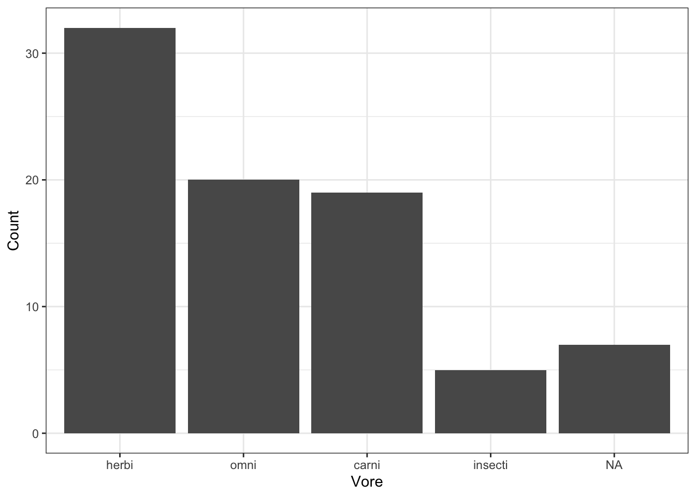

Submission: Completed qmd file and rendered html file via Canvas.
29.1 Overview
These problems apply the idea from the notes ‘3.2 – Visualizations’, where we learned how to create plots using in R using ggplot2.
We will be working with the ggplot2::msleep data (documentation), which contains information on mammals sleep patterns as well as some categorical variables about the species. A subset is shown below:
29.2 Assignment
The goal is to recreate several plots in order to get used to the different types of and the structure of ggplot2 function calls and how to customize plots. The following prompts will take you through a series of plots representing an exploratory data analysis (EDA) where each plot is sequentially updated to new plot types or to incorporate more variables, each time revealing more information.
29.2.1 Part a – Bar graphs
Lets first investigate the sample sizes of different categories within the dataset. Recreate the following bar graph for type of vore.
Note this used the ggplot2::theme_bw() theme. To run a single command and set the theme for all the subsequent created plots, use ggplot2::theme_set() (check the documentation for more details).

To make this plot more readable, a first step we could do is sort the bars according to decreasing frequency (when we do this, it is technically called a “Pareto chart”). To do so, replace vore with the following line of code in your aes() statement: fct_infreq(vore). Check the help documentation of forcats::fct_infreq() to see what this function does.

We can also add the counts atop the bars just like adding data labels in Excel. To do this, add the following lines of code to the previous plot.
< previous bar graph function call > +
geom_text(stat = "count",
aes(x = vore,
label = after_stat(count)),
vjust = -1)Explanation of code:
- geom_text(stat = "count", aes(x = vore, label = after_stat(count))) counts the number of observations at each x vore value and uses the count as a label.
- Then it places the text label by default at the top of each bar, and vjust = -1 moves the label one above the bar.
Be sure to add nicer labels and title.
29.2.2 Part b – Histograms and density curves
Recreate the following histogram of sleep_total, paying attention to the changed aesthetics of the histogram.
Notice that this histogram by default is really choppy, lets change the bins argument to a smaller value to see how it looks. Try a few different values.
Perhaps a smooth curve would be a more accurate representation of this data than a histogram. Recreate the following density curve.
Lets add grouping information to the previous histogram to visualize sleep_total for each different type of vore. To do so, use the fill = vore to the aes() statement.
It is nearly impossible to glean any information from this plot. So let’s switch to a density curve, which is better for displaying several distributions on the same plot. Recreate the following plot, pay attention to which aesthetic vore needs to be mapped to.
Now that we have a readable, accurate plot type for several distributions. Lets investigate more interesting quantities. Suppose we are interested in which animals have the biggest brains (proportionally). To study this we will visualize the ratio of brain weight to body weight based on the classification of animal vore. Recreate the following plot.
HINTS:
- Remember we can do “algebra” with our variables within an aes() statement.
- To remove the NA category, we need to filter them out of the dataset used by ggplot(). We will learn how this function works in more detail next section, but for now replace msleep with the following code: filter(msleep, !is.na(vore)).
- Essentially, is.na(vore) evaluates to TRUE when there is a missing value of NA and FALSE when not missing, then ! flips the logical so that filter() keeps only the non-missing values.
Be sure to add descriptive title and axis label. Write a sentence in your qmd file summarizing the relationships shown in the resulting plot.
29.2.3 Part c – Comparative boxplots
An alternative to multiple density curves is comparative boxplots. Create horizontal comparative boxplots for sleep_total by vore.
Now convert this to a vertical comparative boxplots. Note that there are two ways this can be done. Be sure to add nice title and axis labels and change the overall color scheme of the boxplots to match the context of sleep. Write a sentence comparing the sleep totals for the different kind of vores.
29.2.4 Part d – Scatterplots
Now we will visualize two quantitative variables. Recreate the following scatterplot, which investigates the hours of rem sleep compared to the total sleep hours.
There appears to some kind of relationship between these two variables, which makes sense. The more total sleep an animal gets, the more REM sleep. Lets model the relationship with a regression line. We can do this via the adding the following code to the previous plot.
< previous scatterplot function call > +
geom_smooth(aes(x = sleep_total,
y = sleep_rem),
method = "lm",
se = FALSE)Try commenting out method = "lm" to see the effect. Then change se = TRUE.
Be sure to add nice titles and axis labels.
Is it correct to model this relationship? REM sleep in hours per day is obviously a function of the sleep total; so there will implicitly be a relationship between these variables. To account for this, lets convert REM sleep to be relative to the total sleep hours by taking the ratio again like with brain weight and body weight. Create a new scatterplot with straight trend line for total sleep vs the ratio of REM sleep to total sleep.
Write a sentence describing the relationship between relative REM sleep and the total amount of sleep based on the this and the previous plot.
29.2.5 Part e – Visualize data
Create at least one additional polished plot visualizing relationships among variable(s). Include a sentence write-up detailing any conclusions drawn from the plot. Feel free to create more than one :)